1. 編集モードを開く
自分の学年・学期の時間割を表示し、「自分専用」の右にある鉛筆の編集アイコンを押します。
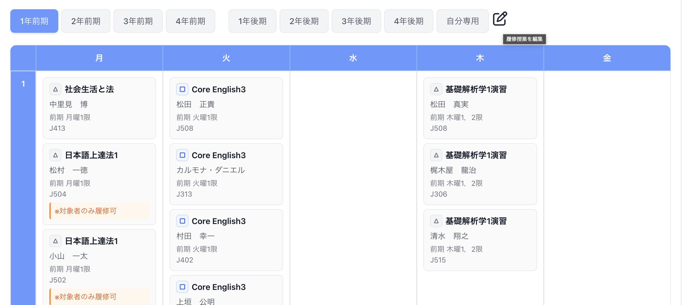
はじめに
ログイン情報と時間割を登録して、Moodleをもっと使いやすく。
まずは下の3ステップから始めましょう。
Chrome右上の拡張機能メニューを開き、「高規格道路」の右側にあるピンの「固定」を押します。ツールバーにアイコンが表示され、次回からすぐに開けます。
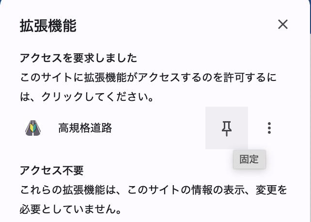
セットアップ
拡張機能の「各種設定」→「Moodleの自動ログイン」にMC2のユーザーIDとパスワードを入力します。入力内容は自動保存されます。「ログイン情報を保存」ボタンでも保存できます。
保存したIDは、所属学科の判定にも使います。
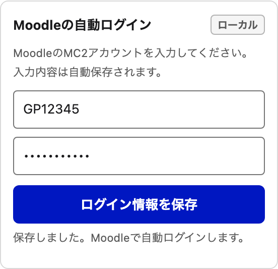
「Moodleを開く」から所属学科の時間割ページへ進みます。「各種設定」の時間割に関する2つのスイッチをONにし、ページを再読み込みしてください。
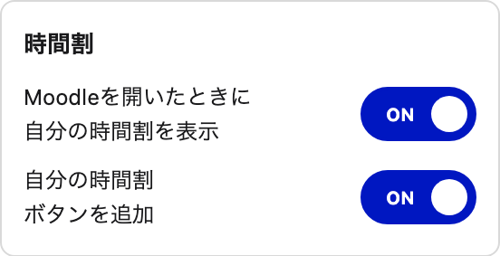
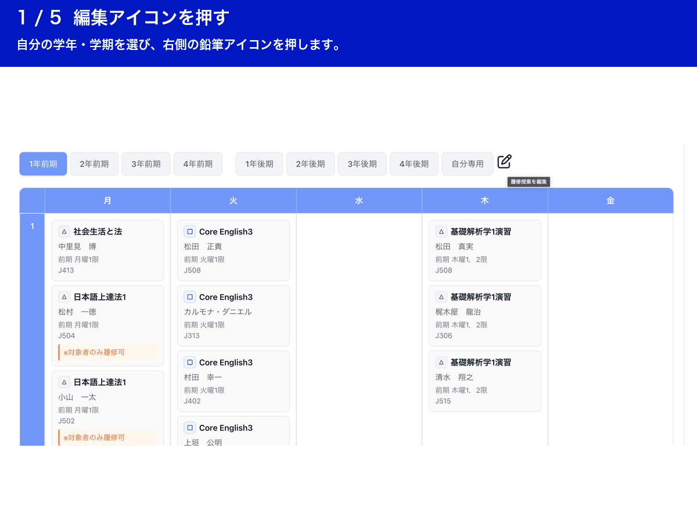
自分の学年・学期の時間割を表示し、「自分専用」の右にある鉛筆の編集アイコンを押します。

編集モードになると、各授業の右上に「◯」が表示されます。授業名・曜日・時限を確認して、登録したい授業の「◯」を押します。
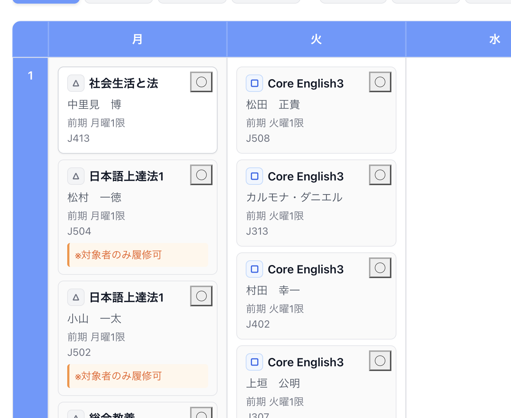
選択した授業は背景が青色になり、ボタンが「✕」に変わります。間違えた場合は「✕」を押して解除できます。必要な授業を同じように選んでください。
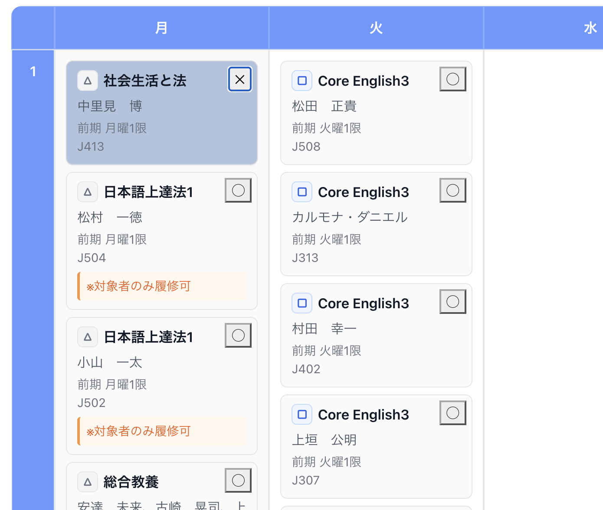
選び終えたら、時間割上部のフロッピー形の保存アイコンを押します。画面左下に表示される緑色の「保存」ボタンからも終了できます。
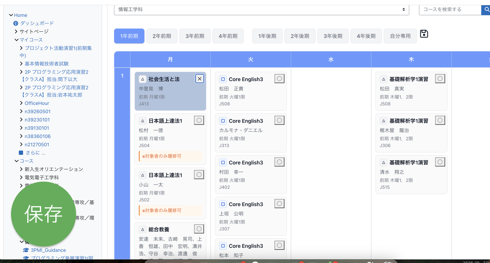
「自分専用」タブを押すと、登録した授業だけが曜日・時限ごとに表示されます。登録を解除するときは、この画面でも編集アイコンを押し、授業の「✕」を押してください。
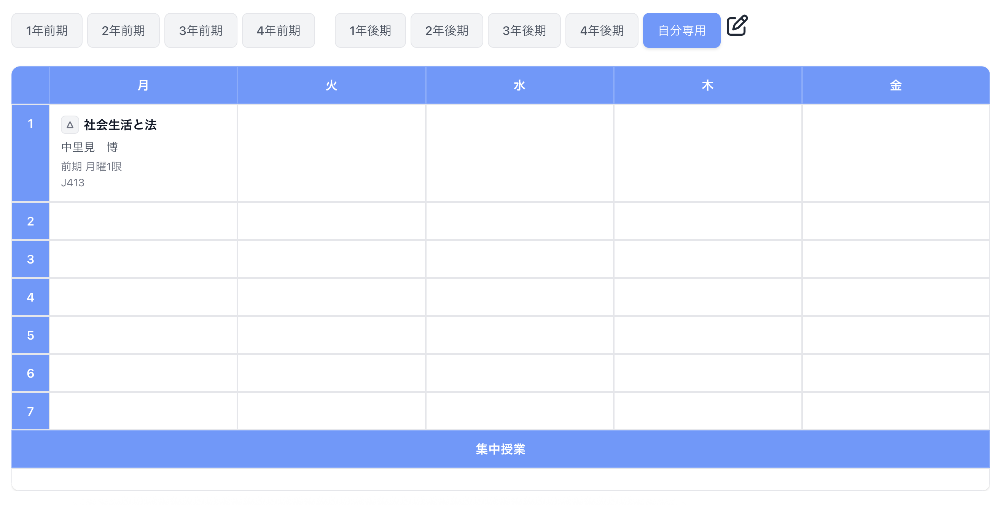
授業時間にボタンを押すと、登録した授業ページを新しいタブで開きます。授業がない時間は所属学科のページへ進みます。
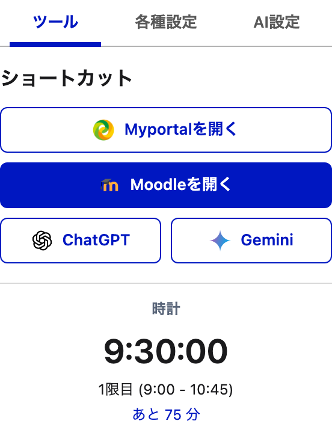
ショートカット
ログインIDが保存され、現在の曜日・時限に登録した授業があるとき。
該当する授業がないとき。保存したIDの先頭2文字から学科を判定します。
ログインIDが未登録、または学科を判定できないとき。
授業時間の判定には、端末の曜日・時刻を使います。登録授業がある場合は学科を判定できなくても授業ページを優先します。休講・祝日・学期の切替は自動判定しません。
| 時限 | 時間 |
|---|---|
| 1限 | 9:00〜10:45 |
| 2限 | 10:55〜12:40 |
| 3限 | 13:25〜15:10 |
| 4限 | 15:20〜17:05 |
| 5限 | 17:15〜19:00 |
終了時刻ちょうどから授業時間外になります。6限以降は現在の自動判定の対象外です。
設定
「各種設定」→「他端末と同期」で切り替えます。初期状態はOFFです。
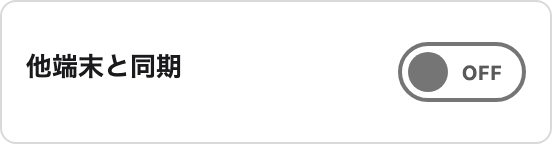
ログイン・AI欄の「ローカル」タグは、この時間割の同期切替の対象外であることを示します。現在の実装ではログイン情報と一部のAI設定はChrome同期に保存され、モデル設定やチャット認証などは別に管理されます。
AIアシスト
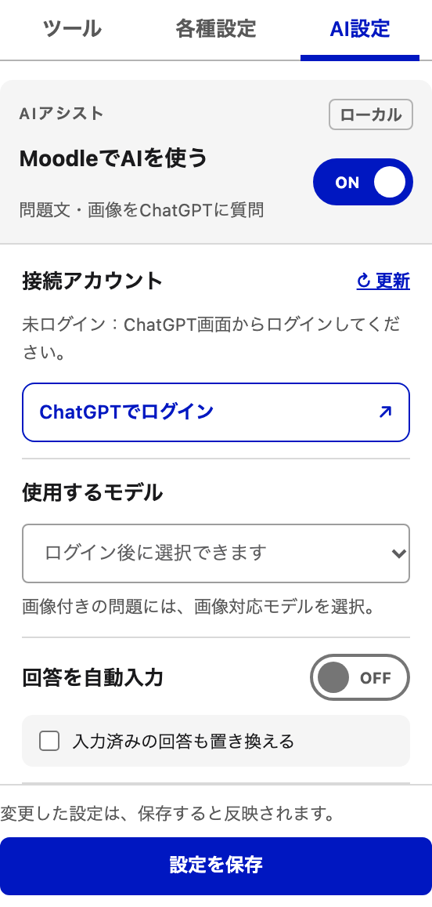
「回答を自動入力」をONにすると、回答を選択肢や入力欄へ反映します。提出は自動で行いません。「入力済みの回答も置き換える」は必要に応じて設定してください。
ヘルプ
「自分専用」の時間割に授業が登録されているか、現在の曜日・時刻が授業時間内かを確認してください。ログインIDが未保存の場合はトップページを開きます。
「各種設定」でMC2のユーザーIDを保存してください。IDから学科を判定できない場合はMoodleトップを開きます。
Chromeの拡張機能管理画面で拡張機能を再読み込みし、開いているMoodleのページも再読み込みしてください。ログインできないときは、保存したID・パスワードも確認してください。
拡張機能の上部、ロゴの右側にある「使い方ガイドを開く」から、いつでも開けます。